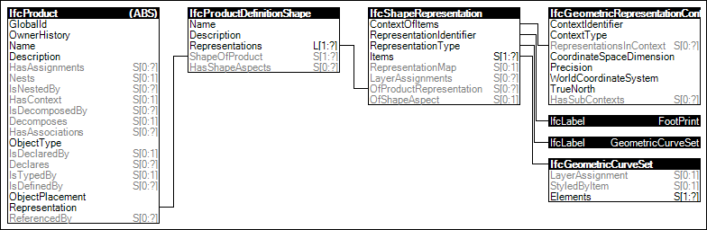

Link to this page
Link to this pageThe 'FootPrint GeomSet Geometry' is the standard representation for the floor plan projection of the geometric representation of elements, comprising of mainly 2D curves
The following attribute values for the IfcShapeRepresentation holding this geometric representation are used:
Figure 35 illustrates an instance diagram.
 |
Figure 35 — FootPrint GeomSet Geometry |